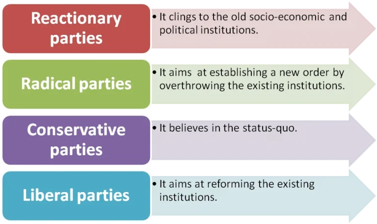
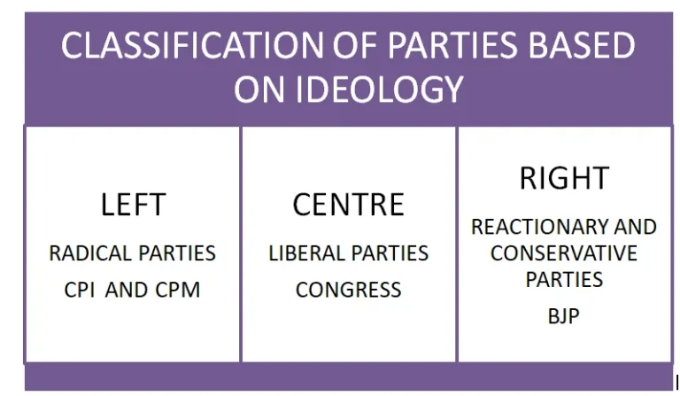
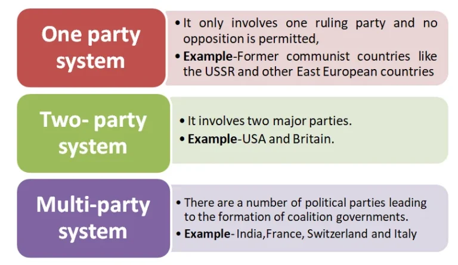

The political party system in India is a complex framework characterized by a multitude of parties representing diverse ideologies and interests. Political parties are voluntary groups of individuals who seek to gain power and promote national interests. India operates primarily as a multi-party system, shaped by factors such as its vast size, diverse society, and the principle of universal adult franchise. This complexity leads to various types of parties, including national, state, and regional entities.
The Dynamics of the Party System in India
Meaning of Political Party
- Definition of a Political Party: It is a voluntary association or organized group of individuals who share the same political views or ideologies and try to achieve political power through constitutional means, and who desire to work to promote the national interest.
Types of Political Parties in Modern Democracies: In modern democratic states, there are generally four types of political parties:
- National Parties: Parties with influence and support at the national level, representing interests across the country.
- Regional or State Parties: Parties focused on regional or state-specific issues, often gaining support in particular areas and addressing localized interests.
- Ideological Parties: Parties based on a particular ideology or set of beliefs, such as socialism, liberalism, or conservatism.
- Single-Issue Parties: Parties centered around a specific issue or cause, such as environmental protection or anti-corruption, often appealing to voters concerned with that particular issue.

Classification of Political Parties Based on Ideology
The political scientists has classified political parties on the basis of ideologies and they are as

Types of Party Systems in World
There are three types of party systems in the world and they are-

Party System in India
The Indian party system has the following characteristic features:
Multi-Party System
Factors Contributing to the Large Number of Political Parties in India
- The continental size of the country
- The diversified character of Indian society
- The adoption of universal adult franchise
- The peculiar type of political process
At present, various types of party status are as:
India has all categories of parties–
- Left parties
- Centrist parties
- Right parties
- Communal parties
- Non-communal parties
The conditions like the hung Parliaments, hung assemblies and coalition governments have also become a common phenomenon.
One-Dominant Party System
- Rajni Kothari’s Concept of the “One Party Dominance System”: Rajni Kothari, a noted political analyst, characterized India’s political landscape as a “one party dominance system” or “Congress system” due to the long-standing dominance of the Congress Party.
- Decline of Congress Dominance Since 1967: Starting in 1967, the Congress Party’s stronghold began to weaken, marked by the emergence of regional and other national parties that challenged its dominance.
- Rise of Other National Parties: Several national parties, such as the Janata Party in 1977 and the Janata Dal in 1989, rose to prominence, challenging the Congress and diversifying the political scene.
- Emergence of Bharatiya Janata Party (BJP): In 1991, the Bharatiya Janata Party (BJP) emerged as a significant political force, further shifting India’s political landscape toward a competitive multi-party system.
- Transition to a Competitive Multi-Party System: These developments led to the evolution of a competitive multi-party system, replacing the earlier single-party dominance model and reflecting India’s diverse political landscape.
Lack of Clear Ideology and Proper Organisation
- Ideological Parties in India: There are only a few parties which have clear ideologies such as BJP and the two communist parties (CPI and CPM), while the rest of the parties do not have a clear-cut ideology.
- Common Ideologies Among Other Parties: All other parties have similar ideologies, they resemble each other in their policies and programmes and advocate democracy, secularism, socialism and Gandhism.
- Focus on Power Over Ideals: More than this, power grab is the only factor influencing all parties, even the ideological ones.
- Shift from Ideology-Based to Issue-Based Politics: Currently, it is seen that politics has become issue-based rather than ideology based as well as pragmatism has replaced the commitment to the principles.
- Organizational Challenges and Lack of Structure: Lack of structure is another feature of the Indian Party System. Many political parties have had difficulties in maintaining their organisational structure at the regional level.
Personality Cult
- Charismatic Leadership in Political Parties: Some political parties are organized around a prominent leader whose personality and influence overshadow the party’s ideology and manifesto.
- Leader-Centric Party Identity: These parties are often recognized more by the identity of their charismatic leaders than by their policies or party programs.
At National Level:
- The popularity of the Congress was mainly due to the leadership of Nehru, Indira Gandhi and Rajiv Gandhi.
At State level:
- AIADMK - in Tamil Nadu with leadership of MG Ramachandran.
- TDP – in Andhra Pradesh with leadership of NT Rama Rao.
- Biju Janata Dal (BJD) - in Odisha with the leadership of Biju Patnaik.
- Shiv Sena – in Maharashtra by Bala Saheb Thackeray.
Based on Traditional Factors
India– The political parties in India are formed based on religion, caste, language, culture, race.
- Religion– Shiv Sena, Muslim League, Hindu Maha Sabha, Akali Dal, Muslim Majlis,
- Caste- Bahujan Samaj Party, Republican Party of India,
- Race/Culture- Gorkha League.
These traditional parties undermine the general public interest by advancing local and sectarian interests.
Emergence of Regional Parties
- Rise of Regional Parties After 1967: Post-1967, a large number of regional parties emerged in the Indian political landscape, gaining prominence in various states, such as the Biju Janata Dal (BJD) in Odisha and the Janata Dal (United) [JD(U)] in Bihar.
- Shift from Regional to National Influence: Initially confined to regional politics, these parties gradually expanded their influence, playing crucial roles in national politics, particularly through coalition governments at the Centre.
- TDP as a Major Opposition Force in 1984: In the 1984 elections, the Telugu Desam Party (TDP) marked a significant shift by emerging as the largest opposition party in the Lok Sabha, demonstrating the growing impact of regional parties on national politics.
Factions and Defections
Key Factors Influencing Indian Political Parties
- Factionalism and Merger– Lust for power and material considerations have made politicians leave their party and join another party or start a new party.
- Defections– It gained greater currency after the fourth general elections (1967).
- Splits - This phenomenon caused political instability both at the Centre and in the states and led to the disintegration of the parties.
Thus, there are two Janata Dals(JDU and RJD), two TDPs, two DMKs(DMK and AIADMK), two Communist Parties{CPI and CPI(Marxist)}, two Congress, three Akali Dals, three Muslim Leagues and so on.
Lack of Effective Opposition
- Lack of Unity Among Opposition Parties: Opposition parties in India often struggle with unity and frequently take conflicting stances regarding the ruling party.
- Limited Constructive Role in Governance: The opposition has faced challenges in playing a constructive role within the political system, impacting their effectiveness in contributing to governance.
- Inconsistent Support for Nation-Building Efforts: Due to internal differences, opposition parties have been less impactful in aiding nation-building processes and supporting long-term developmental goals.
Conclusion
The Indian party system reflects a dynamic interplay of various political forces, influenced by regional, religious, and cultural factors.
While the dominance of major parties has diminished, the emergence of regional parties and the prevalence of factionalism present challenges to political stability. Furthermore, the lack of effective opposition undermines the democratic process.
As India continues to evolve, its political landscape will remain a critical area for analysis and reform.
Helpful for your Revision?
Your interaction updates the core performance matrix of UPSChub modules.